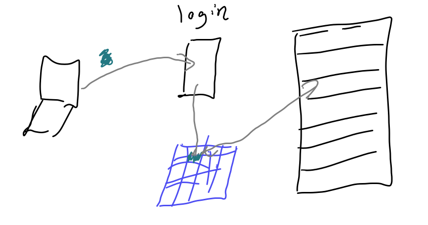

16. How can I work on a remote server?#
Today we will connect to a remote server and learn new bash commands for working with the content of files.
16.1. What are remote servers and HPC systems?#

16.2. Connecting to Seawulf#
We connect with secure shell or ssh from our terminal (GitBash or Putty on windows) to URI’s teaching High Performance Computing (HPC) Cluster Seawulf.
Our login is the part of your uri e-mail address before the @.
ssh -l brownsarahm seawulf.uri.edu
When it logs in it looks like this and requires you to change your password. They configure it with a default and with it past expired.
Note
This block is sort of weird, because it is interactive terminal. I have rendered it all as output, but broken it down to separate chunks to add explanation.
The authenticity of host 'seawulf.uri.edu (131.128.217.210)' can't be established.
ECDSA key fingerprint is SHA256:RwhTUyjWLqwohXiRw+tYlTiJEbqX2n/drCpkIwQVCro.
Are you sure you want to continue connecting (yes/no/[fingerprint])? y
Please type 'yes', 'no' or the fingerprint: yes
Follow the instruction to type yes
I will tell you how to find your default password if you missed class (do not want to post it publicly). Comment on your experience report PR to ask for this information.
Warning: Permanently added 'seawulf.uri.edu,131.128.217.210' (ECDSA) to the list of known hosts.
brownsarahm@seawulf.uri.edu's password:
It does not show charachters when you type your password, but it works when you press enter
Then it requires you to change your password
You are required to change your password immediately (root enforced)
WARNING: Your password has expired.
You must change your password now and login again!
To change, it asks for you current (default) password first,
Important
You use the default password when prompted for your username’s password. Then again when it asks for the (current) UNIX password:. Then you must type the same, new password twice.
Choose a new password you will remember, we will come back to this server
Changing password for user brownsarahm.
Changing password for brownsarahm.
(current) UNIX password:
then the new one twice
New password:
Retype new password:
passwd: all authentication tokens updated successfully.
Connection to seawulf.uri.edu closed.
after you give it a new password, then it logs you out and you have to log back in.
brownsarahm@~ $ ssh -l brownsarahm seawulf.uri.edu
When you log in it shows you information about your recent logins.
[brownsarahm@seawulf ~]$ ls
[brownsarahm@seawulf ~]$ pwd
Notice that the prompt says uriusername@seawulf to indicate that you are logged into the server, not working locally.
16.3. Downloading files#
wget allows you to get files from the web.
[brownsarahm@seawulf ~]$ wget http://www.hpc-carpentry.org/hpc-shell/files/bash-lesson.tar.gz
--2022-03-08 12:58:09-- http://www.hpc-carpentry.org/hpc-shell/files/bash-lesson.tar.gz
Resolving www.hpc-carpentry.org (www.hpc-carpentry.org)... 104.21.33.152, 172.67.146.136
Connecting to www.hpc-carpentry.org (www.hpc-carpentry.org)|104.21.33.152|:80... connected.
HTTP request sent, awaiting response... 200 OK
Length: 12534006 (12M) [application/gzip]
Saving to: ‘bash-lesson.tar.gz’
100%[======================================>] 12,534,006 4.19MB/s in 2.9s
2022-03-08 12:58:12 (4.19 MB/s) - ‘bash-lesson.tar.gz’ saved [12534006/12534006]
Note that this is a reasonably sized download and it finished very quickly. This is because the download happened on the remote server not your laptop. The server has a high quality hard-wired connection to the internet that is very fast, unlike the wifi in our classroom.
This is an advantage of using a remote system. If your connection is slow, but stable enough to connect, you can do the work on a different computer that has better connection.
Now we see we have the file.
[brownsarahm@seawulf ~]$ ls
bash-lesson.tar.gz
we see the new file!
16.4. Unzipping a file on the command line#
This file is compressed.
We can use man tar to see the manual aka man file of the tar program to learn how it works. You can also read man files online from GNU where you can choose your format, this page shows the full version.
[brownsarahm@seawulf ~]$ tar -xvf bash-lesson.tar.gz
This command uses the tar program and:
vmakes it verbose (I have cut this output here)xmakes it extractfoption accepts the file name to work on
We can see what it did with ls
[brownsarahm@seawulf ~]$ ls
bash-lesson.tar.gz SRR307026_1.fastq
dmel-all-r6.19.gtf SRR307026_2.fastq
dmel_unique_protein_isoforms_fb_2016_01.tsv SRR307027_1.fastq
gene_association.fb SRR307027_2.fastq
SRR307023_1.fastq SRR307028_1.fastq
SRR307023_2.fastq SRR307028_2.fastq
SRR307024_1.fastq SRR307029_1.fastq
SRR307024_2.fastq SRR307029_2.fastq
SRR307025_1.fastq SRR307030_1.fastq
SRR307025_2.fastq SRR307030_2.fastq
Note:
To extract files to a different directory use the option --directory
--directory path/to/directory
16.5. Working with large files#
[brownsarahm@seawulf ~]$ cat SRR307023_1.fastq
Warning
this output is truncated for display purposes
@SRR307023.37289418.1 GA-C_0019:1:120:7087:20418 length=101
CGAGCGACTTTTGTATAACTATATTTTTCTCGTTCTTGGCTCCGACATCTATACAAATTCAGAAGGCAGTTTTGCGCGTGGAGGGACAATTACAAATTGAG
...
IDIG?IHBGIIDIHIDDDD#@=@##############################################################################
@SRR307023.37294417.1 GA-C_0019:1:120:18444:20714 length=101
GGGGCAGTGCTAAGGTACTNGAAAGNNNCNNNNNNNNNNNNNNNNNNNNNNNNNNNNNNNNNNNNNNNNNNNNNNNNNNNNNNNNNNNNNNNNNNNNNNNN
+SRR307023.37294417.1 GA-C_0019:1:120:18444:20714 length=101
IIIGIIIHIHHIIIIEFFF#?################################################################################
[brownsarahm@seawulf ~]$ head SRR307023_1.fastq
@SRR307023.37289418.1 GA-C_0019:1:120:7087:20418 length=101
CGAGCGACTTTTGTATAACTATATTTTTCTCGTTCTTGGCTCCGACATCTATACAAATTCAGAAGGCAGTTTTGCGCGTGGAGGGACAATTACAAATTGAG
+SRR307023.37289418.1 GA-C_0019:1:120:7087:20418 length=101
GGFGGFHHHHFEBH@G@EGEGHHEHGHHHHHHHHHBHDGHHGDGFHH?H:DFEDEGGGDGD:DBDA=@BBE@G?D?FD8FDGGDD<:BAB4;4;>CF@B3B
@SRR307023.37289419.1 GA-C_0019:1:120:7127:20414 length=101
GGGCAGGGCCGTAATCAATGCCCCTCAAACACAAAGTTACTGGGAATTCCAAGTTCATGTGAACAGTTTCAGTTCACAATCCCAAGCATGAAAGGGGTTCA
+SRR307023.37289419.1 GA-C_0019:1:120:7127:20414 length=101
HEHGHHHHH@GGBGBHEH@B=EGDGAADDDEFBEFF8:EB(/,257;.;;94/4.>@3@7?A=:C@72;1@;4;A688:<E@GGG<EG3A###########
@SRR307023.37289420.1 GA-C_0019:1:120:7204:20410 length=101
CCACCCACTTAGTGCTGCACTATCAAGCAACACGACTCTTTTGAAACATCATCTAGTAATCATTAACGTTATACGGGCCTGGCACCCTCTATGGGTAAATG
[brownsarahm@seawulf ~]$ tail SRR307023_1.fastq
+SRR307023.37294415.1 GA-C_0019:1:120:17521:20714 length=101
IIIIIIHIIIHIIIIFFFF#?@;B#############################################################################
@SRR307023.37294416.1 GA-C_0019:1:120:17598:20714 length=101
GGGGCACCCACATTATACANAACCANNNANNNNNNNNNNNNNNNNNNNNNNNNNNNNNNNNNNNNNNNNNNNNNNNNNNNNNNNNNNNNNNNNNNNNNNNN
+SRR307023.37294416.1 GA-C_0019:1:120:17598:20714 length=101
IDIG?IHBGIIDIHIDDDD#@=@##############################################################################
@SRR307023.37294417.1 GA-C_0019:1:120:18444:20714 length=101
GGGGCAGTGCTAAGGTACTNGAAAGNNNCNNNNNNNNNNNNNNNNNNNNNNNNNNNNNNNNNNNNNNNNNNNNNNNNNNNNNNNNNNNNNNNNNNNNNNNN
+SRR307023.37294417.1 GA-C_0019:1:120:18444:20714 length=101
IIIGIIIHIHHIIIIEFFF#?################################################################################
We see that this actually take a long time to output and is way tooo much information to actually read. In fact, in order to make the website work, I had to cut that content using command line tools, my text editor couldn’t open the file and GitHub was unhappy when I pushed it.
Note
I initially used head and tail to pick out the excerpts of the terminal output that I needed, but this year I reused what I had done before
For a file like this, we don’t really want to read the whole file but we do need to know what it’s strucutred like in order to design programs to work with it.
We can also see how much content is in the file wc give a word count,
[brownsarahm@seawulf ~]$ wc SRR307023_1.fastq
20000 40000 1625262 SRR307023_1.fastq
We see three numbers, we can use help to see more about that
[brownsarahm@seawulf ~]$ wc --help
Usage: wc [OPTION]... [FILE]...
or: wc [OPTION]... --files0-from=F
Print newline, word, and byte counts for each FILE, and a total line if
more than one FILE is specified. With no FILE, or when FILE is -,
read standard input. A word is a non-zero-length sequence of characters
delimited by white space.
The options below may be used to select which counts are printed, always in
the following order: newline, word, character, byte, maximum line length.
-c, --bytes print the byte counts
-m, --chars print the character counts
-l, --lines print the newline counts
--files0-from=F read input from the files specified by
NUL-terminated names in file F;
If F is - then read names from standard input
-L, --max-line-length print the length of the longest line
-w, --words print the word counts
--help display this help and exit
--version output version information and exit
GNU coreutils online help: <http://www.gnu.org/software/coreutils/>
For complete documentation, run: info coreutils 'wc invocation'
[brownsarahm@seawulf ~]$ wc -l SRR307023_1.fastq
20000 SRR307023_1.fastq
and then we get only the single output
We can use wc with patterns
[brownsarahm@seawulf ~]$ wc -l *.fastq
20000 SRR307023_1.fastq
20000 SRR307023_2.fastq
20000 SRR307024_1.fastq
20000 SRR307024_2.fastq
20000 SRR307025_1.fastq
20000 SRR307025_2.fastq
20000 SRR307026_1.fastq
20000 SRR307026_2.fastq
20000 SRR307027_1.fastq
20000 SRR307027_2.fastq
20000 SRR307028_1.fastq
20000 SRR307028_2.fastq
20000 SRR307029_1.fastq
20000 SRR307029_2.fastq
20000 SRR307030_1.fastq
20000 SRR307030_2.fastq
320000 total
and it gives us each result, plus the total
16.5.1. Searching file Contents#
[brownsarahm@seawulf ~]$ grep --help
Usage: grep [OPTION]... PATTERN [FILE]...
Search for PATTERN in each FILE or standard input.
PATTERN is, by default, a basic regular expression (BRE).
Example: grep -i 'hello world' menu.h main.c
Regexp selection and interpretation:
-E, --extended-regexp PATTERN is an extended regular expression (ERE)
-F, --fixed-strings PATTERN is a set of newline-separated fixed strings
-G, --basic-regexp PATTERN is a basic regular expression (BRE)
-P, --perl-regexp PATTERN is a Perl regular expression
-e, --regexp=PATTERN use PATTERN for matching
-f, --file=FILE obtain PATTERN from FILE
-i, --ignore-case ignore case distinctions
-w, --word-regexp force PATTERN to match only whole words
-x, --line-regexp force PATTERN to match only whole lines
-z, --null-data a data line ends in 0 byte, not newline
Miscellaneous:
-s, --no-messages suppress error messages
-v, --invert-match select non-matching lines
-V, --version display version information and exit
--help display this help text and exit
Output control:
-m, --max-count=NUM stop after NUM matches
-b, --byte-offset print the byte offset with output lines
-n, --line-number print line number with output lines
--line-buffered flush output on every line
-H, --with-filename print the file name for each match
-h, --no-filename suppress the file name prefix on output
--label=LABEL use LABEL as the standard input file name prefix
-o, --only-matching show only the part of a line matching PATTERN
-q, --quiet, --silent suppress all normal output
--binary-files=TYPE assume that binary files are TYPE;
TYPE is 'binary', 'text', or 'without-match'
-a, --text equivalent to --binary-files=text
-I equivalent to --binary-files=without-match
-d, --directories=ACTION how to handle directories;
ACTION is 'read', 'recurse', or 'skip'
-D, --devices=ACTION how to handle devices, FIFOs and sockets;
ACTION is 'read' or 'skip'
-r, --recursive like --directories=recurse
-R, --dereference-recursive
likewise, but follow all symlinks
--include=FILE_PATTERN
search only files that match FILE_PATTERN
--exclude=FILE_PATTERN
skip files and directories matching FILE_PATTERN
--exclude-from=FILE skip files matching any file pattern from FILE
--exclude-dir=PATTERN directories that match PATTERN will be skipped.
-L, --files-without-match print only names of FILEs containing no match
-l, --files-with-matches print only names of FILEs containing matches
-c, --count print only a count of matching lines per FILE
-T, --initial-tab make tabs line up (if needed)
-Z, --null print 0 byte after FILE name
Context control:
-B, --before-context=NUM print NUM lines of leading context
-A, --after-context=NUM print NUM lines of trailing context
-C, --context=NUM print NUM lines of output context
-NUM same as --context=NUM
--group-separator=SEP use SEP as a group separator
--no-group-separator use empty string as a group separator
--color[=WHEN],
--colour[=WHEN] use markers to highlight the matching strings;
WHEN is 'always', 'never', or 'auto'
-U, --binary do not strip CR characters at EOL (MSDOS/Windows)
-u, --unix-byte-offsets report offsets as if CRs were not there
(MSDOS/Windows)
'egrep' means 'grep -E'. 'fgrep' means 'grep -F'.
Direct invocation as either 'egrep' or 'fgrep' is deprecated.
When FILE is -, read standard input. With no FILE, read . if a command-line
-r is given, - otherwise. If fewer than two FILEs are given, assume -h.
Exit status is 0 if any line is selected, 1 otherwise;
if any error occurs and -q is not given, the exit status is 2.
Report bugs to: bug-grep@gnu.org
GNU Grep home page: <http://www.gnu.org/software/grep/>
General help using GNU software: <http://www.gnu.org/gethelp/>
So we can use it as follows:
[brownsarahm@seawulf ~]$ grep length SRR307023_1.fastq
@SRR307023.37289418.1 GA-C_0019:1:120:7087:20418 length=101
+SRR307023.37289418.1 GA-C_0019:1:120:7087:20418 length=101
@SRR307023.37289419.1 GA-C_0019:1:120:7127:20414 length=101
+SRR307023.37289419.1 GA-C_0019:1:120:7127:20414 length=101
@SRR307023.37289420.1 GA-C_0019:1:120:7204:20410 length=101
+SRR307023.37289420.1 GA-C_0019:1:120:7204:20410 length=101
...
@SRR307023.37294416.1 GA-C_0019:1:120:17598:20714 length=101
+SRR307023.37294416.1 GA-C_0019:1:120:17598:20714 length=101
@SRR307023.37294417.1 GA-C_0019:1:120:18444:20714 length=101
+SRR307023.37294417.1 GA-C_0019:1:120:18444:20714 length=101
16.5.2. How many times does mRNA appear in the file dmel-all-r6.19.gtf ?#
We can answer this two ways:
grep has a count option, -c:
[brownsarahm@seawulf ~]$ grep -c mRNA dmel-all-r6.19.gtf
34025
or we can use grep and wc together with a pipe:
[brownsarahm@seawulf ~]$ grep mRNA dmel-all-r6.19.gtf |wc -l
34025
and we get the same answer.
16.6. Closing a session#
we can use exit or logout to clsoe the connection, it will also close if you lose internet.
[brownsarahm@seawulf ~]$ logout
Connection to seawulf.uri.edu closed.
16.7. Using ssh keys to authenticate#
generate a key pair
store the public key on the server
Request to login, tell server your public key, get back a session ID from the server
if it has that public key, then it generates a random string, encrypts it with your public key and sends it back to your computer
On your computer, it decrypts the message + the session ID with your private key then hashes the message and sends it back
the server then hashes its copy of the message and session ID and if the hash received and calculated match, then you are loggied in

Lots more networking detals in the full zine available for purchase or I have a copy if you want to borrow it.
16.8. Generating a Key Pair#
We can use ssh-keygen to create a keys.
-foption allows us to specify the file name of the keys.-toption allows us to specify the encryption algorithm-boption allows us to specify the size of the key in bits
ssh-keygen -f ~/seawulf -t rsa -b 1024
Generating public/private rsa key pair.
/Users/brownsarahm/seawulf already exists.
Overwrite (y/n)? y
Enter passphrase (empty for no passphrase):
Enter same passphrase again:
Your identification has been saved in /Users/brownsarahm/seawulf.
Your public key has been saved in /Users/brownsarahm/seawulf.pub.
The key fingerprint is:
SHA256:UExqbNzmhmxW/rCWvUxb77wU6O7CmUI57G3cBvbYKco brownsarahm@231.126.20.172.s.wireless.uri.edu
The key's randomart image is:
+---[RSA 1024]----+
| oo |
| o +. |
| B + |
| + B . |
| =.S. . . |
| o .=*o. . |
| o+*+Oo.. |
| ooo@=*+ |
| E++=o.=. |
+----[SHA256]-----+
We can see it created a file
ls ~/seawulf
/Users/brownsarahm/seawulf
or even look at the public key
cat ~/seawulf.pub
ssh-rsa AAAAB3NzaC1yc2EAAAADAQABAAAAgQDBurS41c5YmFybXWSDM7QQZdj0/5sCSJsEcS3Cqxm00veJK/c6gqlvftrjOGzmQH9t6VL8MA5scmL8IQqqubfKsVOjLbp7enQNwdxCA6z/v365XAUuvpyEfAxMyT2dxCpdnWdGnDABBAeIqdP4McoBNWQfKjeMwif0hK94vlhCzw== brownsarahm@231.126.20.172.s.wireless.uri.edu
16.9. Sending the public key to a server#
again -i to specify the file name
ssh-copy-id -i ~/seawulf brownsarahm@seawulf.uri.edu
/usr/bin/ssh-copy-id: INFO: Source of key(s) to be installed: "/Users/brownsarahm/seawulf.pub"
/usr/bin/ssh-copy-id: INFO: attempting to log in with the new key(s), to filter out any that are already installed
/usr/bin/ssh-copy-id: INFO: 1 key(s) remain to be installed -- if you are prompted now it is to install the new keys
brownsarahm@seawulf.uri.edu's password:
Number of key(s) added: 1
Now try logging into the machine, with: "ssh 'brownsarahm@seawulf.uri.edu'"
and check to make sure that only the key(s) you wanted were added.
16.10. Logging in#
To login without usng a password you have to tell ssh which key to use:
ssh -i ~/seawulf brownsarahm@seawulf.uri.edu
Last login: Tue Mar 26 12:54:22 2024 from 172.20.126.231
[brownsarahm@seawulf ~]$ client_loop: send disconnect: Broken pipe
Or you can add the following to your ~/.ssh/config file
Host seawulf
Hostname seawulf.uri.edu
Username brownsarahm
IdentityFile ~/.ssh/seawulf
16.11. Prepare for Next Class#
Make sure you have your ssh key configured to seawulf
16.12. Badges#
Answer the following in hpc.md of your KWL repo: (to think about how the design of the system we used in class impacts programming and connect it to other ideas taught in CS)
1. What kinds of things would your code need to do if you were going to run it on an HPC system? 1. What sbatch options seem the most helpful? 1. How might you go about setting the time limits for a script? How could you estimate how long a script will take?
Read through this rsa encryption demo site to review how it works. Find 2 other encyrption algorithms that could be used wiht ssh (hint: try
man sshor read it online) and compare them in encyryption_compare. Your comparison should be enough to advise someone which is best and why, but need not get into the details.Post your public key and then decrypte the message we give you back.
Answer the following in hpc.md of your KWL repo: (to think about how the design of the system we used in class impacts programming and connect it to other ideas taught in CS)
1. What kinds of things would your code need to do if you were going to run it on an HPC system? 2. What sbatch options seem the most helpful? 3. How might you go about setting the time limits for a script? How could you estimate how long a script will take?
configure ssh keys for your github account
Find 2 other encyrption algorithms that could be used wiht ssh (hint: try
man sshor read it online) and compare them in encyryption_compare. Your comparison should be enough to advise someone which is best and why, but need not get into the details.Read through this rsa encryption demo site site and use it to show what, for a particular public/private key pair (based on small primes) it would look like to pass a message, “It is spring now!” encrypted. (that is encypt it, and decrypt it with the site, show it’s encrypted version and the key pair and describe what would go where). Put your example in rsademo.md.
16.13. Experience Report Evidence#
16.14. Questions After Today’s Class#
16.14.1. Can you create a server off any internet connected PC and connect through git bash akin to seawulf?#
You can create a server and connect through ssh from any terminal, yes. Not all will have all of the features of seawulf though.
16.14.2. Is using a remote server safe?#
Depends on the server itself. Using the ones from URI are in most senses and in most cases Amazon, Google and Microsoft ones are, depending on what type of safety. Using corporate ones might mean they have access to some of your data.
16.14.3. Also is a remote server like how a VPN does since you use a computer that is not yours to access things?#
It has that in common, but that is about the end of the similarity. This is a good explore topic.
16.14.4. What happens if you forget your password or lose the SSH key file?#
For seawulf, you have to email ITS to get your account reset.
Generally, you talk to someone who has admin rights. If that’s you… you could fully lose access.
16.14.5. do comapnys use their own private HPCs with their employees?#
Sometimes, othertimes they use Amazon, Google, or Microsoft ones. Those three companies made their own so big they sell access to them to inviduals and other companies alongside their cloud offerings.
Most universities host their own and some share theirs. See, for example HPC at URI which access to includes the Mass Green High performance computing center which is a collab between BU, MIT, Northeastern, UMASS, and Harvard initially that URI has joined.
16.14.6. are we always allowed to use the schools HPC that we used today in class?#
seawulf is specifically for teaching purposes, there are not good data policies for it and your account could be deactivated after the semester is over. If you are doing something for class you can use it, including badges or just tinkering to understand. If you are interested in a side proejct, let me know the purpose and I can help you determine and access a more appropriate HPC system.
16.14.7. can you use an ssh key to log in to your github account to allow you to create push requests?#
yes!
16.14.8. What are some of the other types of virtual machines and what are there uses?#
What we did today was a server not a virtual machine a virtual machine is an isolated system within another system; a server is what hosts virtual machines, and the web.
More broadly, this is a big open question, that is a good explore topic.
16.14.9. What are the capabalities of URI’s seawulf vm? What do people usually do with it?#
You can read the seawulf specs to see what hardward and software it has and the using seawulf page for general information about it.
It is used for learning HPC or doing HPC-requiring computations in courses.
16.14.10. What other ways can ssh keys be used for?#
They’re used for authentication, signatures, or message passing.
16.14.11. Are there any drawbacks to using an ssh key instead of a password?#
Not really, passwords are weak.
16.14.12. what does grep do?#
grep searches the contents of a file
16.14.13. Can ssh use a differnt encryption algorithm thats not RSA thats more secure?#
Yes, see its man file
16.14.14. why is sshing into a server useful?#
Until a few years ago it was the only way to access most servers. Now, more provide a browser based interface, but running that interface uses computational power. So it is more efficient to access with ssh. It also means you can, eg edit in your local IDE but then push and run on a remote server all in one window.
16.14.15. What is the algorithm/logic behind the two generated keys#
This is probably best understood through an rsa demo
16.14.16. Will these ssh keys be able to be decrypted with quantum computing?#
RSA is actually not the most secure already, it is simpler to understand though, so it is a good place to start. Quantum computing, however to the best of my knowledge does not improve encryption breaking, but this is also a good explore topic.
16.14.17. why is the private key so much longer than the public one?#
short answer: It contains extra information
Long answer: this stackexchange post explains it well